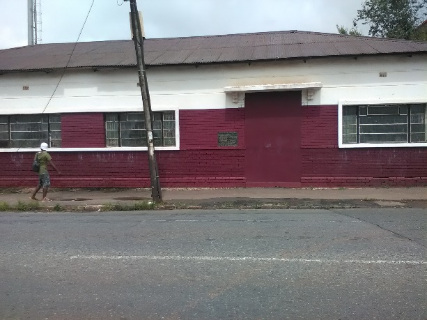
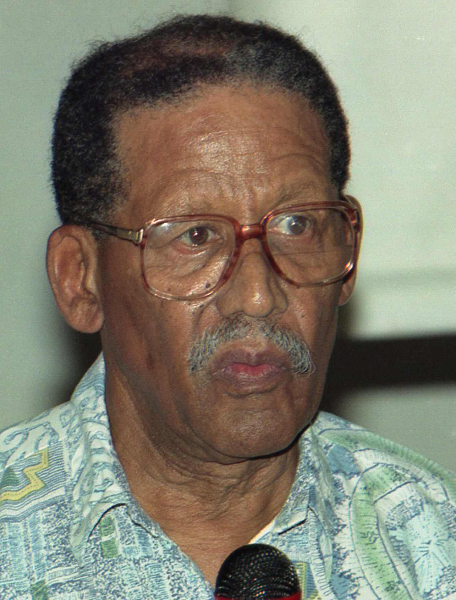
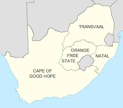
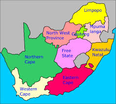

In 1978 South Africa comprised only 4 provinces. Transvaal, Natal, Orange Free State and the Western Cape. Transvaal was the second biggest province, Western Cape the biggest. What was the Transvaal province is now broken up into four provinces Gauteng, Mpumalanga, Limpopo and the North West. TRACOS hosted it’s first SACOS symposium on the 3rd December 1978 in Lenasia. Frank Van Der Horst (SACOS Vice President), Paul David (NACOS), Morgan Naidoo (SA Amateur Swimming Association), were the guest speakers.
TRACOS then hosted a number of SACOS National symposiums and meetings. Most of these huge meetings were held at the Nur Ul Islam Centre in Lenasia and Saint Francis Anglican Church Hall Newclare. The initial symposiums served as a useful platform enabling club structures and individual athletes the opportunity to engage in the development of SACOS strategy and policy. These debates would translate into SACOS policy at SACOS national congresses, the highest decision-making body. This structure would comprise national codes of sport and provincial SACOS structures like TRACOS.
TRACOS hosted many prestigious SACOS events like BGM’s, the MN Pather Memorial Lecture, SACOS Sportsperson of the year awards among them. Fr Smangaliso Mkatshwa, secretary of the Institute of Contextual Study of the Roman Catholic Church was the guest speaker held on Saturday 17 July 1988 at the Saint Francis of Assisi Anglican Church in Croesus Avenue Newclare. COSATU’s Cultural desk provided the entertainment for the evening.
TRACOS hosted SACOS sportsperson of the year awards. It was held on Saturday the 9th November 1985 at the Cathedral Place Catholic Hall in Saratoga Avenue, Doornfontein. At the time 1985 Doornfontein was still an exclusive white suburb under the Group Areas Act one of the cornerstone laws of apartheid. The South African Catholic Bishops Conference who owned the venue had taken a decision years before that any “black” organisation like SACOS would be allowed to use the venue in the all-white suburb. This in their unambiguous support of all legitimate struggle organisations like TRACOS, SACOS, among them.
Delegates, athletes, officials, visitors to these events like symposiums meeting functions, would be housed in local codes of sports member’s homes, local schools, hostels and more. We never lived in cushy hotels. This developed a greater bond and unity in the organisation. People networked, learnt from the various experiences countrywide. This evolved into lifelong friendships and unity of purpose against the apartheid state was galvanised. As many publications were banned these occasions would be used to orally convey messages that may have been banned from being published.
TRACOS would assist provincial codes of sport with the development of their codes, taking the sport to all corners of the province. Where distances were too vast to travel to, smaller units of the provincial codes would be established in local areas. These codes all part of the provincial codes of sport. Non-Racial Sport was played from Potchefstroom to Nelspruit to Thoyando.
TRACOS also assisted with the establishment of chess, unification of women’s hockey, unification of football. Dealt with disputes in cricket, darts and many other codes. TRACOS endeavoured to assist provincial codes with their organisation of major national events. Travelled to far flung areas like Pietersburg (Polokwane). TRACOS endeavoured to establish establish sport in Pietersburg, Sharpeville and SOWETO amongst others. Local sports festival were also held to promote co-operation amongst sporting codes and to introduce new ones.
TRACOS Members
1. Transvaal Soccer Board.
2. Transvaal Cricket Board.
3. Southern Transvaal Amateur Swimming Association.
4. Transvaal Primary Schools' Sports Board.
5. Transvaal Table Tennis Association.
6. Western Areas Table Tennis Association.
7. Western Transvaal Darts Association.
8. Transvaal Women's Hockey Board.
9. Southern Transvaal Darts Association.
10. Transvaal High Schools' Sports Association.
11. Transvaal Baseball Union.
12. Transvaal Softball Union.
13. Western Areas Squash Rackets Federation.
14. Transvaal Tennis Board.
15. Transvaal Men's Hockey Union





Late Reginald Feldman-
First President/Chairperson of TRACOS